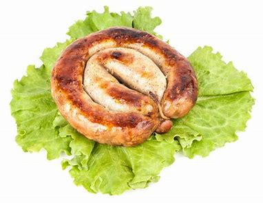

German sausages

the origins of the German sausage goes back to the middle ages, were butchers began experimenting with preserving meat in animal intestines. Over the centuries, the German sausage became a culinary staple, with each region developing their own unique variation. Today, there are over 1,500 different types of german sausage.
Although sausages are high in fat and cholesterol, they do have there benefits. There a great source of protein, high in iron, and they contain Vitamin b12 which is good for your brain.